CONTENTS
CONTENTSYS FLIGHT SIMULATOR
PILOT'S MANUAL
REVISION 08/09/2013
|
YSFLIGHT Family:
Available at |
CONTENTS
Prepare To Fly
- Free flight
- Air combat
- Instant dogfight
- Intercept Mission
- Close Air Support Mission
- Configure Day/Night, Fog, and Wind
- Re-trying the Previous Mission
Navigation Aid (VOR and ADF), Instrument Landing System (ILS), and RADAR
Ground Vehicles
- Controlling Ground Vehicles
- Ground to Air Defense Mission
If you are using Windows XP Service Pack 2, and would like to use the network mode, please read this page, too.
(*)Please also refer to the YSFLIGHT support page. YSFLIGHT support page is linked from
 This program is a flight simulator. You can fly an airplane in your
PC. In this simulator, you can:
This program is a flight simulator. You can fly an airplane in your
PC. In this simulator, you can:
Take off and land
Dogfight with computer airplane
Attack ground targets
Fly a formation leader
Trail smoke to draw a picture in the sky
Fight against your opponent over network
You can choose your airplane from more than 30 modern airplanes. Like other flight simulators, you can change viewpoint while flying. You can watch your airplane from outside, from the opponent airplane's view, missile view, etc. When you are watching from the outside, you'll see the motion of the landing gear and rotation of propeller if you are flying a propeller airplane.
Following environment is required.
Windows XP SP3, Windows 7, Windows 8, Linux, Mac OS 10.6.x or higher
Pentium 1.2GMHz or faster
The program requires roughly 20MB of available memory to run.
DirectX 9.0 or OpenGL 1.2 or higher
If you are using Windows XP Service Pack 3, and would like to use the network mode, please read this page, too.
Following devices are recommended but not required.
Joystick. It's better if the joystick has a POV control. Even better if you have a throttle lever, and don't forget a rudder pedal :-)
[Windows]
You can launch a program from choosing an item from:
START MENU -> Program -> YS FLIGHT SIMULATOR
You can choose one of the following. If you keep SHIFT key pressed down while starting the program, the program always start in normal window mode (not full screen mode). See "Option Dialog" for more details.
| YSFLIGHT OpenGL 2.0 | OpenGL 2.0: Best-quality graphics. Requires reasonably good display adapter. |
| YSFLIGHT OpenGL 1.x | OpenGL 1.x: Polygons are smooth-shaded. Typically runs faster than CPU-Rendered version when PC's graphics card is equipped with an OpenGL accelerator. The graphics quality is better than CPU-Rendered version. |
| YSFLIGHT Direct3D | Direct3D9: Some graphics cards that is not capable of drawing OpenGL fast may be able to draw Direct 3D fast. If OpenGL version does not work well, you can try Direct3D version. |
| YSFLIGHT Console Server | This program works as a network server. You cannot fly with this program. |
If you are not sure which executables to use, please try both and use whichever you feel comfortable. (Most of the recent graphics cards are equipped with OpenGL accelerator, though).
[Mac]
Double-click on ysflight bundle.
[Linux]
Please move to the directory in which you extracted files, and type:
% ysflight2
"% " here is showing a prompt. So, you really need to type only "ysflight2" If the program doesn't start, please also try:
% ./ysflight2
It will work if . (current directory) is not included in path. The executable "ysflight2" uses OpenGL 2.0 features. However, if your environment is not OpenGL 2.0 capable, just type "ysflight" instead.
You can start a console-server version by typing:
% ./ysflight-consvr
If you run a console-server version, make sure your console window has at least 25 lines, or the messages will be messed up.
Please also read the command parameters section. There's no Non-OpenGL version for Linux.
Choose File->Exit to terminate the program.
OK. Let's fly before going into boring explanations. The following steps will take you to the airfield. (In Linux, please start the program by typing ysflight -flyyfs fly_f22.yfs , instead of steps 1 to 5. Case sensitive.)
Launch the program.
Press ESC key to terminate the demonstration.
Choose Simulation -> Create New Flight
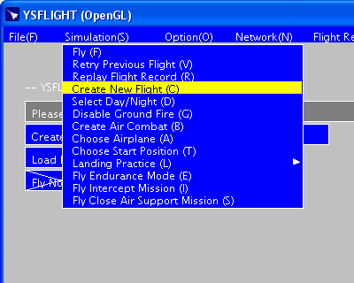
Click "Fly Now" button in "Create New Flight"
dialog.
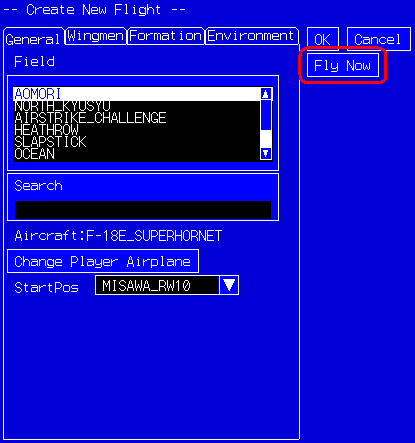
At this point, you may get the following warning message:
"Joystick is not connected or configured"
If you have a joystick connected, and still getting this warning, you might not have configured the joystick in the control panel. Go to
StartMenu->Setting->ControlPanel->Joystick, configure it and try again.
If you do not have a joystick and you don't want to have this warning, go to
Configuration and turn off joysticks, or buy a new joystick :-)
Center the joystick. If you don't have a joystick, you have to use mouse instead of joystick. You can move mouse to know the correspondence of mouse cursor and joystick position.
Move the stick to the center before proceed. Press any trigger button, mouse button or space key to go to airfield.

Ready to fly!

Now, you are ready to fly. I don't explain the details of the flight dynamics here. I hope you know how to fly an airplane :-) So, press TAB key to turn on afterburner. After getting 120kt, slowly pull the stick back (move mouse down).
If you pull the stick too much before gaining sufficient airspeed, it may cause a tail-strike accident, or if you are in a big airplane, the airplane may not be able to accelerate to the take-off speed within the length of the runway because of the drag. Make sure you have enough airspeed, then pull the stick slowly. Then, the airplane will take you to the air. Have fun! You can read about detailed control in "How to control?" section.
 I
am trying to make this program run comfortable in a three-year old PC.
In fact, I am compiling and testing this program on my 2008 MacBook Pro.
However, you may have to turn off some features or lower the resolution
to run this program on relatively slower PCs.
I
am trying to make this program run comfortable in a three-year old PC.
In fact, I am compiling and testing this program on my 2008 MacBook Pro.
However, you may have to turn off some features or lower the resolution
to run this program on relatively slower PCs.
If you are using YSFLIGHT on Windows, there are three different executables included in the installation package, "OpenGL 2.0", "OpenGL 1.x", and "Direct 3D", which you can choose from Start Menu.
Most of the recent PCs are equipped with a 3D-graphics capable display adapter. If you are lucky enough, OpenGL 2.0 implementation will give good-enough performance and good graphics quality. However, sometimes implementation of OpenGL is incomplete, or in many cases flawed. In that case, you can try YSFLIGHT Direct3D. It can be opposite. OpenGL implementation may work and Direct 3D implementation may fall apart.
If you are using Linux, there's no "CPU Rendered" or "Direct 3D" version. Please make sure your X-Window system supports OpenGL. If you installed Linux from scratch, most likely the OpenGL driver was not installed with the basic package. You may need to go through a painful process to install the OpenGL driver. (Painful unless you are an Linux system expert. At least that was painful to me.) But, if you are successful, and if your display adapter supports 3D acceleration, you will be able to enjoy YSFLIGHT in Linux.
Your choice of the field will affect the speed. Most air fields have many facilities, hangars and other ground objects. If your PC is not very fast, the program cannot take care of those ground objects quickly. However, the field "SMALL_MAP" does not have many ground objects. If you want to fly a dogfight or an endurance mode, you may not care much about the ground. In such cases, choosing "SMALL_MAP" will be better in terms of the program speed. In contrast, a map "TOHOKU", which is available after 20010718 version, is heavy. You need at least a PenIII450MHz and a fast graphics card to play TOHOKU map without stress. "NORTH_KYUSYU" would be the most complex scenery that comes with the standard package, and you may require a decent display adapter to fly comfortably in that scenery.
If you still feel slow, you can go to Configuration Dialog and turn off some features. Choose Option->Config and press "Draw Fast" button. Settings will automatically be customized for relatively slower PCs. You can turn off some more features to speed up, but I do not recommend. (For the detail, see Configuration Dialog)
If still you feel slow after turning off features, you can lower the resolution. Then, go to Option Dialog and choose lower resolution.
If you are running this program under Windows NT, you'll feel some short stopping while flying. Typically, when you change throttle setting, fire a gun, stop firing a gun etc... In such case, go to Option Dialog and turn off sound. This Windows NT's stopping is caused by WAV playing function.
In the Configuration Dialog, you can configure graphics features and simulation features. Each setting means:
[Default Tab]
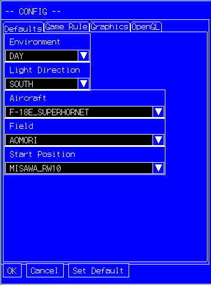
Default Environment
You can choose DAY or NIGHT.
Light Direction
Specify from which direction the scene is lit.
Default Airplane
The airplane chosen in
this list will first show up in the airplane
selection screen.
Default Field
The field chosen in this list will first show up in the create-flight
dialog.
Default Position
The start position chosen in this list will first show up in the
create-flight dialog.
[Game Tab]
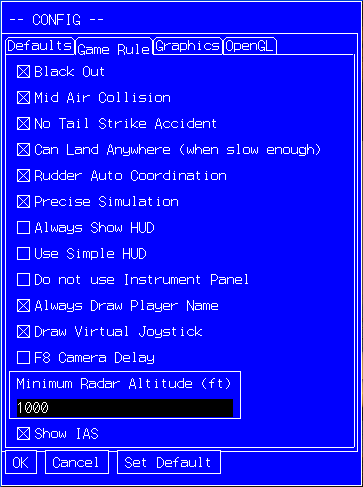
Black Out
If this box is on, when you apply a high G force, you will lose visibility gradually, and finally will be blacked out. (If high negative G force, will red out).
Mid Air Collision
If this box is on, when you collided with another airplane, your airplane will get damage, and typically, will crash. If this box is off, your airplane will never collide with another airplane.
No Tail Strike Accident
If this box is on, the airplane will not explode when you strike tail on
take off or landing.
Can Land Anywhere
If this box is checked, you can land anywhere. However, if the
speed is too fast (like more than 20kt) the airplane will vibrate
violently, and ends up crashing or tail-striking.
Rudder Auto Coordination
If this box is on, computer automatically control the rudder to eliminate sideslip of the airplane. To be fair, it is applied to all airplanes flying (except recorded airplanes). In actual flight, a pilot has to use rudder pedal while turning so that the airplane will not have side slip. It is called "turn coordination". But, I guess many users do not have a rudder pedal, and it is a pain to coordinate a turn by keyboard. So you can turn on this box.
Precise Simulation
If this box is on, the program computes dynamics at least every 50ms. If this box is off, the program computes dynamics once when a screen is refreshed once. Usually, refreshing a screen takes more time than 50ms. So, if this box is off, the simulation is less precise. (I don't recommend you to turn off this box. You may try if this program runs really slow on your PC).
Always show HUD
If this box is checked, HUD is shown even when you are
looking at your airplane from the outside.
Use Simple HUD
If this box is checked, simplified version of HUD will be shown.
In a low-resolution environment, the simplified HUD may be easier to
read than the standard HUD.
Do not Use Instrument Panel
If this box is checked, the program draws Head Up Display no matter
if the airplane has an instrument panel or not.
Always Draw Player Name
If this box is checked, player name is always visible.
Draw Virtual Joystick
If this box is checked, small virtual joystick will be drawn on the
screen while flying.
F8 Camera Delay
If this box is on, external airplane camera (assigned to F8 key by
default) follows the airplane with some time delay.
Do not show an airplane on radar if it is below XXXX
ft.
The airplane flying below XXXX ft and far from the player airplane
will not be shown on the radar.
Show IAS
If this check box is on, the airspeed shown in the instrument and HUD
will be indicated airspeed (IAS). If this box is off, true
airspeed (TAS) will be shown. In a real airplane, the airspeed
indicator shows IAS. Default setting is ON.
[Graphics Tab]
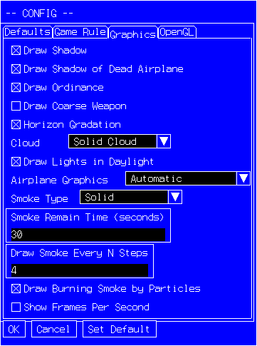
Draw Shadow
If this check box is on, the shadow of the airplane is drawn precisely when the airplane is flying low. If this box is off, still the shadow is drawn, but the shadow is roughly drawn.
Draw Shadow of Dead Airplane
If this box is checked, the program draws shadow of crashed
airplanes.
Draw Ordinance
If this box is checked, the program draws ordinances loaded on the
airplanes.
Draw Coarse Weapon
If this box is checked, the program draws weapons with less polygons
so that it can draw scenes faster.
Horizon Gradation
If this check box is on, you'll see a gradation on the horizon. If this box is off, no gradation on the horizon.
Draw Cloud
As it is.
Solid Cloud / Flat Cloud
If Solid Cloud is chosen (default) the cloud will have some volume,
otherwise (if Flat Cloud is chosen) the cloud will not have volume (just
flat).
Airplane Graphics
Automatic : Draws high quality model when an airplane is close to the
viewpoint, and low quality model when far away.
Always High Quality : Draw high quality model regardless of the distance
from the viewpoint.
Always Coarse : Draw low quality model regardless of the distance from
the viewpoint.
Draw Light in Daylight
If this box is checked, runway lights and city lights are visible in
DAY mode.
Smoke
Configure type of smoke, how long the smoke remains and the resolution of the smoke.
You can choose a type of smoke from: towel, solid, circle and noodle. Towel smoke looks like a lo---ng towel. Solid smoke is most similar to actual smoke. But solid smoke takes more time to draw than other types. Noodle smoke looks like a lo---ng noodle. It can be drawn quickly, but does not look nice.
If you choose circle smoke, the smoke is drawn as a sequence of circles. it cannot be drawn very fast, also does not look good. So I don't recommend it. I just experimentally implemented this feature.
Remain ?? seconds, means as it is.
Draw every ?? steps specifies the resolution of the smoke. If you specify smaller number, the resolution becomes better, but the drawing will be slower. By default, smoke is drawn every 4 steps.
[OpenGL Tab]
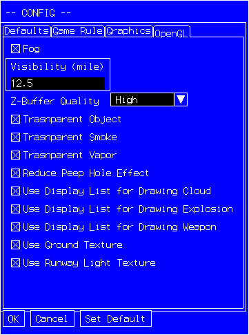
Fog
If this box is checked, the program draws fog, which increases
reality a little bit. Only available on OpenGL version. This
option, however, requires a card that can draw OpenGL graphics fast.
Z-Buffer Quality
It specifies quality of Z-Buffering in OpenGL version. You can
choose one of "LOW(FAST)", "HIGH", "VERY
HIGH", and "SUPER HIGH." Lower Z-Buffer quality
gives higher frame ratio, but you'll see some objects that are not
supposed to be visible. Higher Z-Buffer quality gives better
graphics and you'll less likely see objects that are not supposed to be
visible, but by sacrificing frame ratio.
Transparent Object (OpenGL only)
Some objects (typically afterburner) become semi-transparent if it
is checked.
Transparent Smoke (OpenGL only)
Smokes become semi-transparent if it is checked.
Transparent Vapor (OpenGL only)
Vapor become semi-transparent if it is checked.
Reduce Peep Hole Made by Transparent Polygons (OpenGL
only)
Transparent polygons sometimes makes peep holes in which you'll
see something that is supposed to be hidden by another object.
Perfectly eliminating such peep holes is computationally intensive, and
will make the program very slow. However, I can reduce such peep
holes by slight increase of computation. If you turn this check
box on, the program will try to reduce such peep holes. An example
of the effect of this check box is shown below.
 |
<- "Reduce Peep Hole Made by Transparent Polygons" off. The horizon that is supposed to be hidden by the hangar is visible through a peep hole created by the propeller polygon of A6M5. |
 |
<-"Reduce Peep Hole Made by Transparent Polygons" on. The peep hole is gone. |
Use Display List for Drawing Cloud
If this box is checked, the program uses what is called "display
lists" for drawing clouds. If the graphics card has sufficient
memory buffer for storing display lists, the drawing performance should
increase.
Without display lists, the program transfers all polygons every time a scene is drawn. If the object is static and does not move, the program ends up with sending exactly the same information each time, and it creates considerable transaction of data between CPU and the graphics card. Instead of sending the same data many times, the program can transfer a chunk of data to the graphics card only once and later tell the graphics card to draw the chunk of data already stored in the graphics card's memory. By doing this, the program only needs to tell the graphics card the identification number of the chunk of data to draw the same thing. For example, if a missile model consists of 1000 polygons, the program needs to send 1000 polygons to the graphics card for each frame if it does not use display lists. If that many polygons are stored in the graphics card's memory, the program only needs to send one integer number to the graphics card to draw the object. It'll save time for drawing graphics significantly.
Use Display List for Drawing Weapons
If this box is checked, the program uses display lists
for drawing weapons.
Use Display List for Drawing Explosions
If this box is checked, the program uses display lists
for drawing explosions..
Use Ground Texture
If this box is checked, the program uses texture to draw maps.
Use Runway Light Texture
If this box is checked, the program uses texture to draw runway lights.

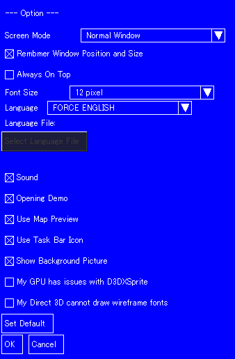To change program option, select:
"Option"->"Option"
Screen Mode: You can select normal window, maximized, or other full-screen modes.
Remember Window Position and Size: The program remembers the position and the size of the window when the program terminates.
Always On Top: Keep YSFLIGHT window always on top of other windows.
Font Size: You can select the height of the font in pixels.
Language: You can select FORCE ENGLISH, AUTOMATIC, or SELECT LANGUAGE FILE. If you want to use an external language file, which may be prepared by a volunteer YSFLIGHT user community, choose "SELECT LANGUAGE FILE" and specify the language file you downloaded.
Select Language File: You can click on this button only when "SELECT LANGUAGE FILE" is selected as "Language"
Sound: Turn on/off sound effect.
Opening Demo: Turn on/off opening demo.
Use Map Preview: Turn on/off map preview.
Use Taskbar Icon: If this button is turned on, the program will stay in the task bar area, when it is minimized.
Show Background Picture: Turn on/off background picture.
My GPU has issues with D3DXSprite: If your font is dissolving due to Direct 3D's problem, try turning it on. It might solve the problem.
My Direct 3D cannot draw fonts: Direct 3D is such a horrible API and it cannot draw fonts correctly in some environments. If you experience such problem, turning this option on may solve the problem.
If you change a screen mode in OpenGL version, you may encounter some problems due to incompatibilities of video card drivers. If you cannot start up OpenGL version after changing the resolution, try one of following three options.
(1) Start YSFLIGHT with pressing SHIFT key down. The program will always start in normal window mode if you do so. Then, go to Option Dialog and set the screen mode back to normal window.
(2) If option (1) doesn't work, choose "YSFLIGHT - RESET SETTING" from "Start Menu" -> "Programs" -> "YS FLIGHT SIMULATION SYSTEM 2000." This will initialize all the settings.
(3) If option (2) doesn't work, start the Non-OpenGL version and go to Option Dialog to set the screen mode back to normal window.
(4) If none of the above two options works, re-install YSFLIGHT.
If all three options fails, you should suspect problems of your video card driver or something other than YSFLIGHT.
If you are using an Intel GPU, the letters may appear like dissolving to the background. If it happens, the numbers and messages on the simplified HUD may become very hard to read. If you encounter this problem, you can check "My GPU has issues with D3DXSprite". If this box is checked, the program uses system font to draw text. The texts may not be aligned correctly, but this solves the dissolving-letter problem.
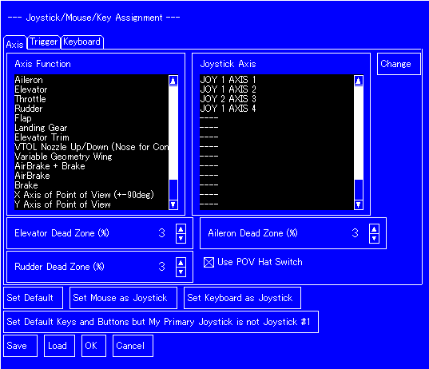You
can change functionalities assigned to joystick, mouse, and
keyboard. To change assignments, please choose:
"Option" -> "Config Key/Mouse/Joystick Assignment"
The dialog shown on the right will appear.
In the dialog, choose a functionality in list boxes, and click "Change" button to change the assignment. For example, if you want to assign Axis 3 of Joystick 2 to throttle, click "Throttle" in "Joystick/Mouse Axes" box, and click "Change" button located right of "Joystick/Mouse Axes." Then, choose Joystick 2 Axis 3, (check "Reverse" if necessary) and click "OK."
You can also save your assignment to a file by clicking "Save" button, and you can load your assignment when you re-install YSFLIGHT, or upgrade to a newer version. However, if you load the assignment configured by an older version, no key or button is assigned to a new features added in a newer version. If you upgrade YSFLIGHT to a newer version, and if you load your key assignment, please assign new features to appropriate keys or buttons manually.
If you need to reset the assignment back to the default assignment, click "Default" button.
If you are using a joystick that is not joystick #1 in your environment, you don't have to re-assign all the axes one by one. Instead, you can click on "Set Default Keys and Buttons but My Primary Joystick is not Joystick #1", and then make a complete circle with your joystick that you want to use in YSFLIGHT.
There are the following four types of flights in this simulator.
To start the free-flight mode, select Simulation -> Create New Flight. You will then see the following dialog.
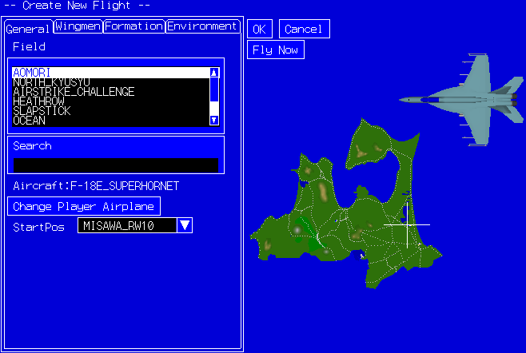
General Tab
Field You can select a field.
Search You can search a field by typing keywords.
Change Player Airplane You can change your aircraft by clicking this button. See aircraft selection below for more information.
Start Pos You can select your starting position in the selected field.
OK Return to the main menu. Then you can select "Simulation" -> "Fly" to start flying, or "File"->"Save" to save your selection. If you want to start flying immediately, click "Fly Now" button instead.
Cancel Return to the main menu. The selection made in this dialog will be thrown away.
Fly Now Start flying.
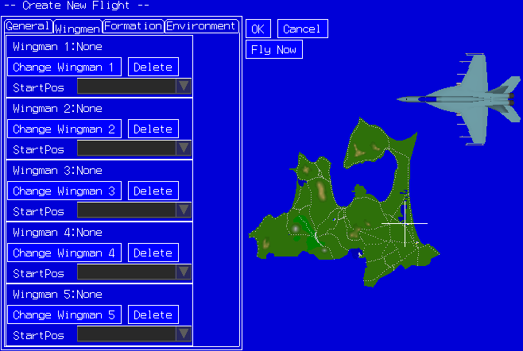
Wingman Tab
Change Wingman X You can select your wingman by clicking this button.
Delete You can de-select your wingman by clicking this button.
Start Pos You can select a start position for the wingman with this drop list.
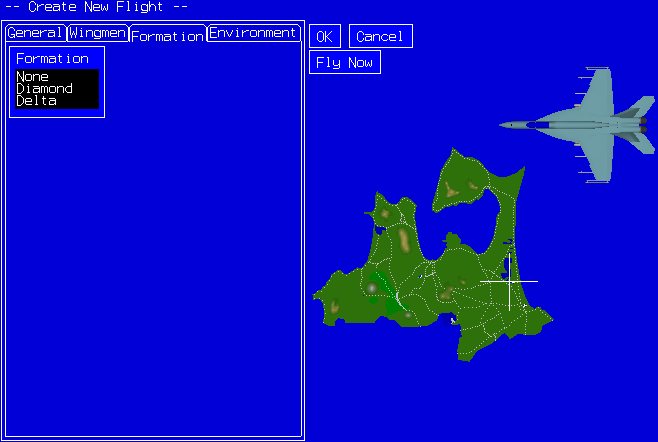
Formation If you select wingmen and select one of the formations here, your wingmen will try to form a selected formation with you.
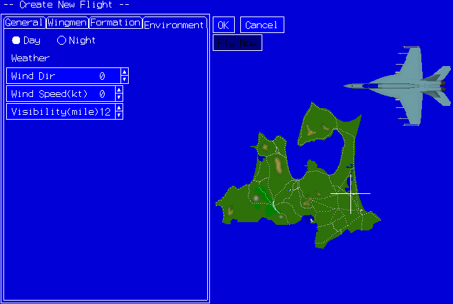(7) Environment
Environment tab
Day/Night Select day or night.
Wind Dir Wind direction.
Wind Speed Wind speed.
Visibility Visibility.
When it is necessary to select an aircraft, you will see the following dialog. In this dialog, you can select your aircraft, weapons, fuel, and smoke. By the way, rotate the aircraft by pressing the mouse left-button outside the GUI items, and the moving the mouse cursor with the left button held down.
<< AIRCRAFT TAB >>
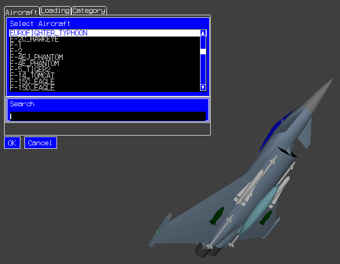
Select Aircraft This list box allows you to select an aircraft.
Search You can type keywords in this text box to narrow down your selection. For example, if you type "F 18" in the text box, only aircrafts that has "F" and "18" in its name are shown in the Select Aircraft list box.
<< LOADING TAB >>
AAM (Short Range) A short-range missile for dog fighting. However, once the missile loses its target, the missile will never re-acquire the target again.
A-AAM (Short Range) A short-range missile for dog fighting. Even when the missile loses its target, if the aircraft that fired this missile is still maintaining lock-on to the target, the missile turns toward its target again.
AAM (Mid Range) A mid-range missile. This missile is not as agile as short-range missiles. However, when the missile loses its target, if the aircraft that fired this missile is still maintaining lock-on to the target, the missile turns toward its target again.
AGM An anti-ground missile.
Rocket A rocket is an unguided. But, when it hits the target, it is a lot more destructive compared to a machine gun.
Chaff/Flare Pod This allows you to carry extra chaff/flares.
BOM(500lb) 500-pound free-fall bomb. It is strong, and if you drop it from low-altitude, your airplane may be blown away by the explosion.
BOM(250lb) 250-pound free-fall bomb. It is less strong than 500-pound bomb. However, if you drop it from low-altitude, your airplane may be blown away by the explosion.
BOM(500lb-HD) 500-pound high-drag bomb. It is suitable for low-altitude high-speed bombing. Once dropped, it opens banes to increase aerodynamic drag, and the bomb will land behind the airplane.
FUEL TANK This will let you carry extra fuel. When you need to increase your agility or when it is empty, you can drop it.
Fuel (%) Specify fuel by percent of its internal fuel tank.
Smoke If checked, the airplane carries smoke oil.
Smoke Color Specify color of smoke.
<< CATEGORY TAB >>
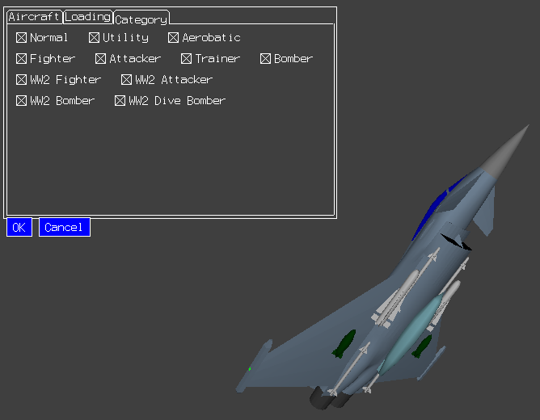
Category You can narrow down your airplane search by these check boxes.
You can create and fly an air-combat mission. Select "Simulation -> Create Air Combat" from the main menu. You will see the following dialog. In the dialog, select your airplane and enemy airplane. You can have up to two wingmen and five enemies. Also, you can select whether you use air-to-air missiles. Click "OK" to return to main menu so that you can save the mission from the main menu. If you want to start flying immediately, click "Fly Now" button.

Since 2000/07/03 release version, you can fly an instant dogfight. In this mode, if you kill opponent airplanes, new opponent airplane will be generated and will attack on you.
The dogfight is limited to 15 minutes. No opponent airplane will be generated after this time period. If you survive 15 minutes of the air combat and if you kill the remaining enemies after this time period, you'll have chance to land to the base alive.
To play Instant Dogfight, choose "Simulation"->"Fly Endurance Mode".
In an intercept mission, you take off with your wingman (wingmen), and intercept attackers. To play an intercept mission, choose "Simulation" -> "Intercept Mission."
In a close air support mission, you need to destroy enemy tanks attacking your base. To play a close air support mission, choose "Simulation" -> "Close Air Support Mission."
Configure Day/Night, Fog, and Wind
To configure Day/Night, Fog, and Wind, select "Simulation" -> "Set Environment" after creating flight or dogfight, before selecting "Simulation" -> "Fly." Or, you can choose default environment in Config Dialog. (Configuration by "Simulation" -> "Set Environment" overrides the configuration of Config Dialog.)
Re-trying the Previous Mission
You can re-try the previous mission by choosing "Simulation" -> "Retry Previous Mission"
You may want to printout the key assignments. So, I prepared independent page for it.
You CAN use a keyboard to control elevator and aileron, if you really want. Please see Changing Key/Mouse/Joystick Assignent to change settings.
Standard HUD

(1) Ammuition. >><< indicates the ammunition
is selected, and ready to launch by trigger 1.
(2) Bank angle indicator
(3) Airspeed (kt)
(4) Altitude (ft)
(5) VSI: Vertical Speed Indicator (feet/minutes)
(6) Attitude of the airplane. Line of 0 is the horizon.
(7) Mach number and G force
(8) Velocity vector. Activated and de-activated by V key.
(9) Throttle setting
(10) Remaining fuel
(11) Elevator, aileron and rudder
(12) Heading angle indicator
(13) Landing gear, brake, flap, and spoiler (airbrake)
Simplified HUD
In a low-resolution environment, the simplified HUD may be easier to read than the standard HUD. You can choose to use simplified HUD by checking the box "Use Simple HUD" in the "Game Rule" tab of the Configuration dialog.

(1) Ammuition. >><< indicates the ammunition
is selected, and ready to launch by trigger 1.
(2) Bank angle indicator
(3) Climb/Descend ratio (x100 feet/minutes)
(4) Heading angle indicator
(5) Airspeed (kt)
(6) Attitude of the airplane.
(7) Altitude (ft)
(8) Mach number
(9) G force
(10) Throttle setting
(11) Velocity vector. Activated by V key.
(12) Landing gear, brake, flap, and spoiler (airbrake)
(13) Elevator, aileron and rudder
(14) Remaining fuel
Instrument Panel
(* Instrument panel configuration vary from airplane to airplane.)

(1) Airspeed Indicator
(2) Attitude Indicator
(3) Altemeter
(4) ILS
(5) Flap
(6) Fuel quantity
(7) Brake
(8) Turn coordinator
(9) Heading indicator
(10) Vertical speed inciator
(11) VOR
(12) Throttle setting
After 2000/07/03 version, the way to control weapon system changed from the previous version. You have to choose a weapon by 2 key or trigger 2 of the joystick, and fire it by 1 key, SPACE key or trigger 1 of the joystick.
Available weapons and equipments are as follows.
| GUN | Machine Gun. No guidance. And, it has no effect against a huge target like bridges and aircraft carriers (except the gun loaded on A-10A Thunderbolt2). |
| AAM | Air to Air Missile. The missile is guided to the locked on target. You can fire from any direction, but you have higher chance to kill the target when you fired the weapon from the behind the target. |
| A-AAM | Air to Air Missile. It is guided just like an ordinary AAM. However, even after missing the target once, as long as the airplane that fired this missile still maintains lock-on to the target, this missile will maneuver to re-acquire the target. |
| AGM | Air to Ground Missile. The missile is guided to the locked on target. |
| RKT | Rockets. |
| FLR | Flare to fool anti-air missiles. |
| BOM | There are three types of bombs. 500lb/250lb Free Fall Bomb and 500lb high-drag bomb. No guidance. Most effective when it directly hits the target. But, if you dropped the bomb close enough to the target, you can destroy it. There is no bomb-sight for a high-drag bomb. |
| SMOKE | It's not a weapon, but you can operate same as a weapon. |
| FUEL | External fuel tank. You can drop it when you need to make your airplane lighter immediately. |
Available weapons depend on the airplane.
In YSFLIGHT, you can use two types of navigation equipments, VOR and ADF.
A VOR indicates a deviation of a certain course passing through a selected VOR station from your airplane. It also tells if the VOR station is in front of or behind your airplane. Many of the airplanes in YSFLIGHT has two VOR receivers. To distinguish them, one is called NAV1, and the other NAV2.
To use VOR, first you select a station, and then specify the course by selecting a course heading called OBS. Press L-key to select a VOR receiver. You will see a menu for selecting a VOR station. Pressing L-key one more time will switch to NAV2, and another stroke will switch to a NDB-selection menu. (NDB is a station for ADF.) After selecting a station, press 7-key or 8-key to change OBS.
Meaning of VOR indication is as follows. Assume that you turned your airplane to the OBS heading. The needle of the VOR tells lateral deviation of the course from your airplane. For example, the needle of NAV1 shown below is right of the center. So, if your airplane heading is 360, the VOR station is on your right. Also, beside the OBS is TO/FROM indication. If it says "TO", the station is ahead of you, or "FR" behind you.
 |
 |
 |
| NAV1 | NAV2 | ADF |
When I learned it for the first time, my first impression was why is this thing so complicated? But, if you just want to fly to the station, there is an easy way of using it. First select a station, then turn OBS (by 7- or 8-key) until the needle is centered and TO/FROM indication becomes TO. Then, the OBS tells you the heading you must fly to reach the station.
You can also tune NAV1 to an ILS, or Instrument Landing System. If you tune NAV1 to an ILS, it will tell you lateral and vertical deviation of the ideal approach path from your airplane. The vertical deviation is shown by the horizontal needle called glide slope. The vertical needle will show you the lateral deviation of the ideal approach course from your airplane. So, once you are on the approach course, you will be able to fly an ideal approach path by chasing the needle. You can also tune NAV2 to an ILS, but it does not have glide slope indication. When you tune NAV1 or NAV2 to an ILS, OBS does not have an effect on the indication.
If an airplane is equipped with HUD, ILS needle will also be shown on the HUD as shown below.

ADF is a lot more simple. ADF needle will tell a relative direction to the selected NDB station from your airplane. If you keep the needle centered, you will eventually come to above the NDB station.
Also RADAR equipment is available for air combat and anti-ground attack. You can turn on the RADAR or change the RADAR range by 3 key or trigger 3 of the joystick. The RADAR range cycles through OFF -> 5 miles -> 10 miles -> 50 miles -> (repeat).
The RADAR has three modes as Anti-Air, Anti-Ground and Bombing. The mode changes automatically when you change the wapon of choice.
 |
 |
 |
| (Anti-Air mode) | (Anti-Ground mode) | (Bombing mode) |
In Anti-Air mode, X marks show the ground objects and square marks show airplanes. White marks are friendly objects and Green marks are hostile objects. A small tip of line attached to the square show the flying directions of the airplane.
Anti-Ground mode is almost same as the Anti-Air mode, but it shows more objects in front of the airplane than ones behind the airplane.
In Bombing mode, the circle on the radar shows the estimated impact point of the bomb. If you are flying B-2 or Tu-144, you can carpet bomb referring to the circle and the cross mark.
From release version 2012/07/01, you can fly instrument flight under guidance from a virtual air traffic controller. Please see the following URL for more details.
You can re-fuel or re-load ammo by completely stopping your airplane near a supply truck or on an aircraft carrier and then pressing HOME key. (You can assign a different key for this functionality by selecting "Option -> Joystick/Key Assignment" from the main menu.) In the following dialog, change fuel/ammo and click OK. Some supply trucks can supply only fuels and no weapons.

CAUTION: If you are using Windows XP Service Pack 2, you need to unblock YSFLIGHT from Windows Firewall. Please follow this link for more information.
Since 20001125 release version, YSFLIGHT2000 features network play. More than one player can fly a same airspace and fight against each other. Or you can cooperatively attack heavily defended ground target. If your PCs are connected to a high speed (10Mbps or faster) connection, you may be able to fly a formation of 6 airplanes and perform an aerobatic flight. I haven't tested how many players are practically possible, but theoretically, the program must accept 17 players at maximum.
Since 20021205 release version, you can play Endurance Mode and Intercept Mission over the network. You can cooperatively attack against computer airplanes or defend your base with your friend. To start the endurance mode, press E key in the server menu. To start the Intercept mission, press B key in the server menu. If you want to terminate the Endurande mode or the Intercept mission, press T key. (Pressing T key does not delete already flying computer airplanes. You have to take care of them anyway.)
In the network play, you may get damage even when you don't see any bullets or missiles striking your airplane. In such a case, your opponent's airplane is seeing his bullet or missile striking your airplane. It is because there is always some delay in transmitting position information. This problem can be moderated if I write a smart code that expect future path of the airplane, however, instead of making my code smart, I made a rule of the network play as follows.
Say user A is flying an airplane P in computer X, and user B is flying an airplane Q in computer Y. If user A fired a weapon and the weapon strikes airplane Q in either one of (or both) computer X or computer Y, airplane Q gets damage.
In summary, if you really see your airplane being hit, or your opponent sees his weapon striking your airplane, you get damage.
Consequently, even you think that your opponent's bullets are strayed from your airplane, say 20m behind you, you shouldn't stop your maneuver to avoid opponent's attack. If you are flying at 200m/s, and if the network delay is 0.1 second, you'll see your opponent's bullets strayed 20m behind you when your opponent is seeing his bullets striking directly your airplane. And, this is a game to play happily. Don't begin fist fight screaming "Hey, your bullet didn't hit me! You did something unfair!". Your opponent is not unfair. It is a nature of network play.
If you want to fly with a friend who is apart from you, you may want to chat with your friend while flying, though, YSFLIGHT2000 itself does not transmit texts for chatting. In such a case, you can open an external chatting program beside YSFLIGHT2000's window. However, while you are chatting with your friend, you cannot control your airplane. In order not to crash your airplane while chatting, you can use auto-pilot. If you press BS (backspace) key, your airplane will fly a holding pattern until you press BS key once more.
But, I don't recommend to use voice chat and YSFLIGHT2000 at the same time. Experiments showed that Windows may freeze if you try to use voice chatting program and YSFLIGHT2000 at the same time. You can avoid this problem by turning off YSFLIGHT2000's sound effects. However, even if you successfully start YSFLIGHT2000, practically you cannot fly with your friend over network because the network-load of voice transmission eats bandwidth up and YSFLIGHT2000 cannot transmit airplane's position, state etc.
 To play over the network, one player needs one computer. And, one
computer must work as a server. The other computers must connect to the server as clients. The figure on the right shows an
schematic image of the network connection. A player in front of the computer can join the flight either when a computer is working
as a server or when a computer is connected to the server.
To play over the network, one player needs one computer. And, one
computer must work as a server. The other computers must connect to the server as clients. The figure on the right shows an
schematic image of the network connection. A player in front of the computer can join the flight either when a computer is working
as a server or when a computer is connected to the server.
To begin a server, choose Network menu -> Server and type your name. To access to a server as a client, choose Network menu -> Client, and type your name and the network hostname of the server.
The server address is shown under the server menu as follows. So, you can tell it to your friend by phone or chat program or in whatever way you have.
However, when your PC is sharing an IP address with another PC(s) (eg. when a PC is connected via dial-up router), or when your PC has more than one network connection (eg. dial-up connection + LAN card), this address may not be valid. In such a case, please ask your network administrator for the correct address. (Please do not ask me about the host address. It depends on your PC's environment, and I am not your tech support. I'm suffering from overwhelming E-Mail of this kind of question. I'll ignore them all.)
CAUTION: When a YSFLIGHT version of the client does not match a YSFLIGHT version of the server, the client may get the following message and be rejected from the server.
If you see this message, please upgrade both the server and the client to the latest version of YSFLIGHT.(*1 YSFLIGHT of version 20021205 or newer has a feature that smoothes the motion of airplanes behind the network. However, if a server or a client is running YSFLIGHT of older version than 20021205, this feature does not work.)
Now you are ready to join the flight
When you start a server, you will see a server dialog by which you can control the server.
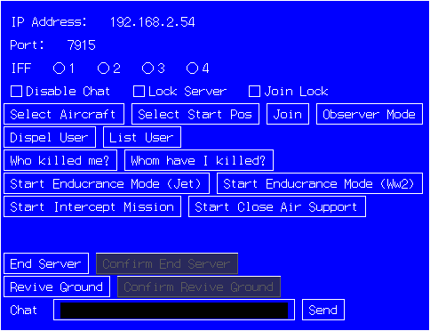
Server Dialog
When you log on to the server, you will see a client dialog by which you can control the client.
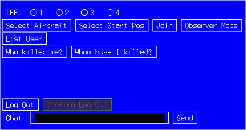
Client Dialog
Or, you can control your server or client also by the following short-cut keys.
| A | Choose airplane |
| S | Choose start position |
| J | Start flying |
| L | List users (on the client, flying users only) |
| D | Dispell user. (Server only) |
| C | Lock server and block all further logon request. Pressing C key again to unlock the server. (Server only) |
| E | Start the Endurance mode |
| B | Start the Intercept mission |
| T | Terminate the Endurance mode or the Intercept mission |
| ESC | Terminate server or client |
| 1,2,3,4 | Choose IFF code. IFF stands for "Identify Friend or Foe system". You cannot lock on an airplane which has same IFF code (thus, your missile will not be guided toward the airplane with same IFF code) |
To choose an airplane or a start position, use arrow keys, UP arrow and DOWN arrow. If you press UP or DOWN key with SHIFT key, choice moves faster. Press SPACE key to decide. (You can press ESC key or ENTER key to decide. ESC will not cancel your choice).
When flying with more than two players, be careful not to begin a flight at the same position, or you will end up with mid air collision as soon as you start a flight.
I am not assuming to use this network play feature between the PCs that are located in a remote places. I am assuming all PCs are in the same room and players have voice communications. So, the program itself doesn't have chatting capability. If you want to chat with your opponent while flying, please run another chatting program simultaneously.
You can configure network-play options by Network menu->Network Option. If you choose Network menu->Network Option, the following dialog pops up.The following table explains each item.
| General 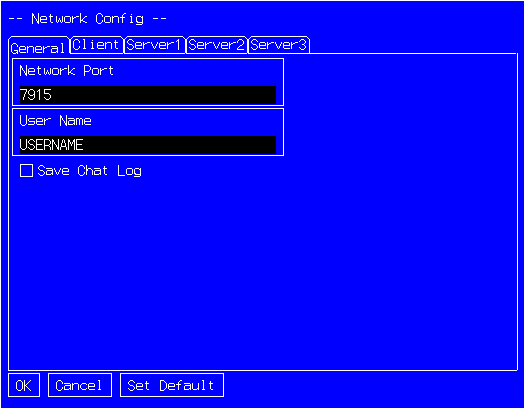 |
|
| Network Port | Specify network port number for network play. The default port number is 7915. A client cannot connect to a server if network port numbers doesn't match. |
| User Name | Specify a default username. |
| Save Chat Log | If you check this box, chat log will be saved in "My Documents\YSFLIGHT.COM\YSFLIGHT\netchatlog" |
| Client 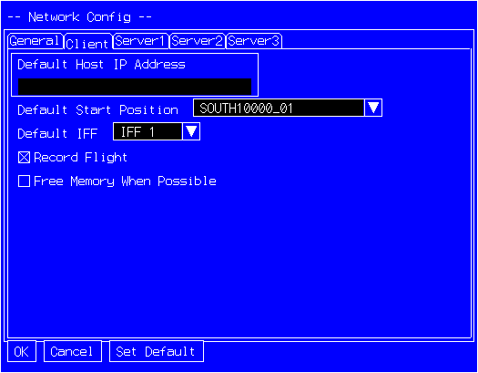 |
|
| Host Address | Specify a default hostname to connect when your PC works as a client. |
| Start Position | Specify a default start position when your PC works as a client. |
| IFF | Specify a default IFF code when your PC works as a client. |
| Record Flight | If you check this box, the program records flight while running a client. |
|
Server1 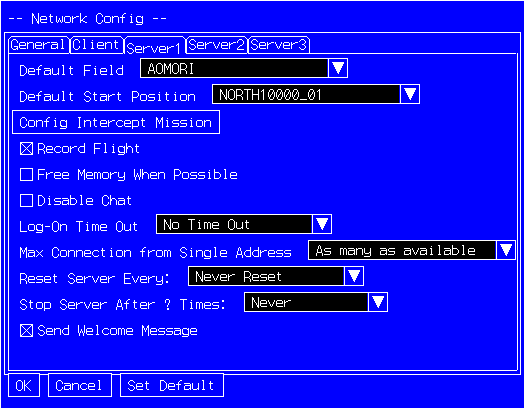 |
|
| Field | Specify a field that you use in a network play. A server has a right to choose a field. So, this "Field" is valid only when your PC is working as a server. |
| StartPosition | Specify a default start position when your PC works as a server. You can change the start position by [S] key after you start a server. |
| IFF | Specify a default IFF (Identify Friend or Foe) code when your PC works as a server. |
| Record Flight | If you check this box, the program records flight while running a server. |
| Config Intercept Mission | Change settings of the Intercept mission. |
| Disable Chat | If this box is on, the users cannot send/receive text messages. |
| Log On Time Out | If a client connects to the server, but does not complete the log-on request within the specified time, the server will disconnect the client. |
| Multi Connection from Same IP | Limit connection from a single IP address. |
| Reset Server Every | You can choose the interval of resetting the server. When the server is reset, all the users are logged out, and need to connect again to continue playing. The server sends warning messages 30, 15, 10, and 5 minutes before reset. |
| Stop Server After Resetting | If N times is chosen for this
option, and Reset Server Every X Hours is set, the server will
terminate automatically after resetting N times. This option
may be useful if you'd like to run a server only on weekends.
You can configure the network options so that it resets every 6 hours, and stops the server after resetting nine times. Then, set a task scheduler so that it launches fsmaino.exe with the options "-server Server -autoexit" at 6pm every Friday. Then, the server starts at 6pm on Friday, reset at 0am, 6am, 12 noon, 6pm on Saturday and Sunday, and stops at 0am on Monday. |
|
Server2 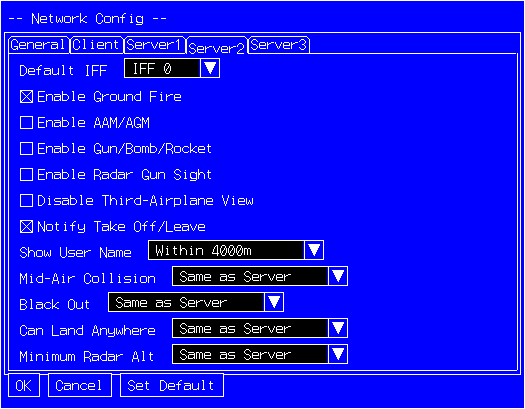 |
|
| Ground Fire | If this check box is on, AAAs and SAMs will fire at airplanes during the network play. |
| Use AAM/AGM | If you check this box, the program allow to use AAM/AGM in the network mode. The server has right to decide to allow or not to allow AAM/AGM. |
| Use Gun/Bomb/Rocket | If you check this box, the program allow to use Gun/Bomb/Rocket in the network mode. The server has right to decide to allow or not to allow Gun/Bomb/Rocket. |
| Disable Radar Gun Sight | If this check box is on, radar gun sight (or lead gun sight) is disabled in all the client regardless the configuration of the client. |
| Disable Third Airplane View | If this check box is on, no player is allowed to see other airplane's activities by using view control (by default F3 key.) |
| Notify Take Off / Leave | If this check box is on, the server notifies clients when a user takes off or leaves the airplane. |
| Show User Name | This option controls if the username is shown always, never, only within 1000m, only within 2000m, or only within 4000m. |
| Mid Air Collision | This option controls if "Mid Air Collision" option in the network mode is same as server, enabled, disabled, or do not control (up to the client.) |
| Black Out | This option controls if "Black Out" option in the network mode is same as server, enabled, disabled, or do not control (up to the client.) |
| Can Land Anywhere | This option controls if "Can Land Anywhere" option in the network mode is same as server, enabled, disabled, or do not control (up to the client.) |
| Radar Alt Limit | If "Same as Server" is chosen, the lowest altitude that an airplane is visible on the radar on the clients will be set to the same altitude as the server. |
|
Server 3 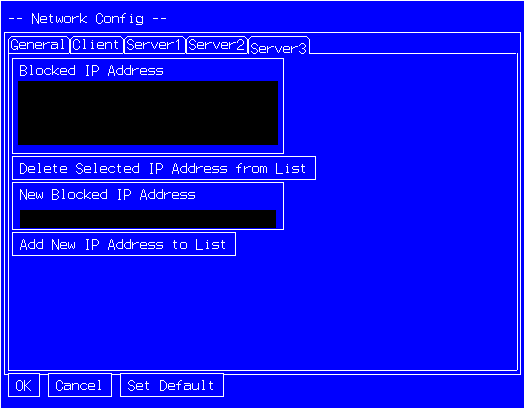 |
|
| Blocked IP Addresses | The server will reject connection from the IP Addresses listed here. |
| Add | Add an IP address to the list |
| Delete | Delete selected IP address from the list. |
| Outside | |
| Set Default | Set all configurations to the default values. |
- Decimating a flight record
When you fly a very good flight, you may want to show your flight record to your friend by sending the flight record by E-Mail or by posting it on your Web site. However, a flight record file tends to be big, often too big to send by E-Mail or to store in your Web space that your internet service provider gave you. In such a case, you can 'decimate' your flight record to reduce the size of a flight record file.
CAUTION: These operations are not undoable. I recommend to save your raw flight record before decimation for backup.
There are two ways to decimate a flight record. One reduces the time precision, and the other reduces the space precision. To reduce the time precision, choose "Flight Record Utility"->"Set Time Precision" and specify the time step. Default time step is 0.05 second, thus the flight record is taken once every 0.05 second. By specifying larger number, you can reduce the size of a flight record.
To reduce the space precision, choose "Flight Record Utility"->"Set Space Precision" and specify the space precision in meters. The default space precision is 0.01, which means two digits after decimal point will be stored in the flight record file. By specifying larger number, you can reduce the size of a flight record.
- Editing a flight record
 You
can also chop off some portion of the flight record that is not very
spectacular. To edit your flight record, choose "Flight Record Utility"->"Edit
Flight Record." You will see a screen similar to "Replay
Flight Record", but you will see a dialog as shown on the
right. Meaning of each buttons and textboxes are as follows.
You
can also chop off some portion of the flight record that is not very
spectacular. To edit your flight record, choose "Flight Record Utility"->"Edit
Flight Record." You will see a screen similar to "Replay
Flight Record", but you will see a dialog as shown on the
right. Meaning of each buttons and textboxes are as follows.
CAUTION: These operations are not undoable. I recommend to save your raw flight record before editing for backup.
| T0, T1 | Time marker (you can manually type in a number or capture the current position by "Capture" button) |
| Jump | Jump to the time marker |
| Capture | Capture current time to a marker |
| Delete-Between T0 and T1 | Delete flight record between T0 and T1. |
| Delete-Before T0 and after T1 | Delete flight record before T0 and after T1. (Thus, only between T0 and T1 will remain). |
| Play- || | Pause |
| Play- > | Play at 1x speed |
| Play- <<< | Very fast rewind |
| Play- << | Fast rewind |
| Play- >> | Fast forward |
| Play- >>> | Very fast forward |
You can start a simulation in a ground vehicle by selecting "Simulation"->"Create Simulation in Ground Object" or "Simulation"->"Ground-To-Air Defense Mission"
You can control a ground vehicle as follows:
Throttle (Q/A keys by default): Control forward speed
Brake (B key by default): Turn on/off brake
Thrust Reverser ("." key by default): Control backward speed
Joystick: Turn left and right when no weapon is selected, or controlling firing direction when a weapon is selected.
You can try "Ground-to-Air Defense Mission" from "Simulation Menu". In this mission, you control an anti-air ground vehicle and defend the base. Not all maps are prepared for the ground-to-air defense mission.
This flight simulator is built using Blue Impulse 3D Graphics SDK and YS Geometric Calculation Library.
Blue Impulse 3D Graphics SDK is designed for interactive
3D visualization programs. I developed it for my master's thesis research project. It runs in a acceptable speed
even in a relatively slow platforms. One advantage of the toolkit is cross-platform capability. Actually, if I re-compile
source code of this flight simulator in SGI or X-Window environment, it runs (Except dialog boxes and joystick
features. I just used #ifdef WIN32,#endif for those WIN32 depending part). Another advantage is scalability. If
you build a program in a relatively slower platform, you'll want to use flat-shaded version. But, you can get smooth
shaded version just by re-compile with the library file of OpenGL implementation.
YS Geometric Calculation Library provides wide variety of 3D calculation features, including basic vector classes, matrix classes, shell classes, intersection/collision detection..... This library also has template classes like array, linked list etc.
Both toolkits are free and open source. Please visit the Web site.
But, it doesn't mean I'm going to open source codes of YSFLIGHT2000. I have no plan to open the source code of this flight simulator. Only source codes of toolkits are open.
Blue Impulse 3D Graphics SDK is a foundation toolkit of YSFLIGHT2000. But, it doesn't mean that you can easily modify existing airplane or create new airplane in YSFLIGHT2000. Blue Impulse 3D Graphics SDK is a general purpose 3D Graphics toolkit. But it is not dedicated to YSFLIGHT2000.
 Comments are welcome. Send E-Mail to:
Comments are welcome. Send E-Mail to:
In both address, I can read E-Mail written in either Japanese or English.
Web-Page:
Related Web-Page:
AIRPLANE SOFTWARE - Download cool 3D airplane screensavers etc.
Airplane Photo Gallery - Tons of airplane photos.
| RWxx_yy | On the runway. "xx" means the direction of the runway. "yy" means the position number. |
| NORTHxxxxx_yy, SOUTHxxxxx_yy, EASTxxxxx_yy, WESTxxxxx_yy |
North, south, east or west of the airfield. "xxxxx" means the altitude (ft). "yy" means the position number. |
 There are several example missions. You can choose them from
File->Load, then choose Simulation->Fly.
There are several example missions. You can choose them from
File->Load, then choose Simulation->Fly.
I write brief explanations of each mission.
EscortMission.yfs
A cargo airplane is inbound to your base. Take off and escort
them back to the base safely.
fly_f22.yfs
This file is used in Instant Flight section.
A6M5vsB29.yfs
A formation of B-29 is approaching Misawa air base. Take off
in A6M5 Zero Fighter and intercept the bomber formation. Give
appropriate commands to your wingmen to make the mission successful.
P51vsG4M.yfs
A formation of G4M Betty is approaching your base. Take off in
P-51 Mustang and intercept the bomber formation. Give
appropriate commands to your wingmen to make the mission successful.
SpitfireVsFw190.yfs
Ride Royal Air Force Spitfire and intercept Luftwaffe Focke Wulf 190
over London.
fleetbattle1.yfs
Take off the aircraft carrier with your wingman, fly east, and
destroy enemy fleet before they destroy a friendly aircraft carrier.
After the mission, return to the ground base, or the carrier that
you took off. You need to give appropriate commands to your
wingman to win the battle.
fleetbattle2.yfs
Take off the aircraft carrier with your wingman, fly east, and
destroy enemy fleet. Fighters are guarding the airspace around
the enemy fleet. Use mid range missile to destroy some of
them, and destroy the rest of them in a dogfight. After the
mission, return to the carrier that you took off. You need to
give appropriate commands to your wingman to win the battle.
concorde_in_hawaii.yfs
Take off Kona International Airport in Hawaii island, turn left
heading 310, climb maintain 45,000ft, and you are cleared for Mach
2.0! When Oahu island is close, descend and decelerate to
prepare to land. Fly south of Oahu island with heading 260,
altitude 2,500ft. Make 180 degree right turn, and you are
cleared for ILS approach runway 8L of Honolulu International
Airport. Final approach speed is 160kt. Use PageUp/PageDown
key to move variable geometry nose (or droop nose) to gain downward
visibility!
badiamond.yfs
bidiamond.yfs
tbdiamond.yfs
Fly a formation leader of world famous "United States Navy Blue Angels",
"United States Airforce Thunderbirds" or "Japan Air Self Defence Force Blue Impulse".
At the beginning, you'll be on runway. You'll see another three airplanes behind
(use M key to look back).
To take off, turn on afterburner and push the throttle to the max power (press TAB key once and press Q key until the power becomes max, or just push your throttle lever forward if you have an external throttle lever).
After air-bourn, keep the nose 10 to 15 degree pitch. Press B key or use POV to look back periodically. You'll see the #4 airplane sliding into its position. After #4 took in position, turn off the afterburner and reduce the power to the half of military (press TAB once again and press A key until the power becomes half, or just pull your throttle lever back to that power).
Again, use M key or POV control, wait until other airplanes catch up you. You can make smooth turn during this procedure.
At this point, you can fly what ever you want. But, remember that you are the formation leader. You must not perform a rapid maneuver, especially lateral maneuvers (rolling). You have to fly really nice and smooth. You also should not use max power or minimum power with airbrake. If you fly so, they cannot keep up with you because other airplanes have the same flight dynamic characteristic (no more acceleration or deceleration). You also have to
keep between 200kt and 500kt until landing.If you pull your trigger 1 or 2, other airplanes will draw a smoke with you. You can try, diamond roll, diamond loop, and whatever diamond something maneuver with trailing smoke. You should keep plus G (more than 2.0G is good) while you are performing a formation aerobatic maneuver.
Finally, you should land your airplane to the runway. Your wingmen will just follow you. So, you have to land exactly on the centerline of the runway.
Try!
After 20000226 version, anti air artillery and surface to air missiles are added. So, you may want to attack heavily defended ground targets. Each map has heavily guarded ground targets. Why are they within just 20 to 30 km of the airbase? Please don't ask me that question(^_^;) But, you can attack them. Some maps also has the start position "CLOSE BY THE GROUND TARGETS". If you choose it, you'll start flying several miles away from the ground targets. Otherwise, please takeoff and search the targets by yourself. They are heavily guarded by anti air artilaries and surface to air missiles. Attack them by your AGMs (anti ground missiles) and machine guns!
Please see also Close Air Support Mission.
The following command parameters (options) are available for both Windows and Linux versions.
-h
-help
Show help.
-keymenu
Use key menu.
-replayrecord Filename
Replay flight record.
-freeflight Airplane Field Position
Fly Free Flight.
-flyyfs Filename
Load .YFS and fly.
-endurance Airplane Field NWingmen WingmenLvl UseMissile
Endurance Mode (15 minutes dogfight)
NWingmen : 0 to 2
WingmenLvl : 1 to 5
UseMissile : 0(not use) or 1(use)
-intercept Airplane Field Stealth Escort HeavyBomber Bomb NEnemy NWingmen
Intercept Mission (15 minutes base defense)
Stealth : 0(not allow stealth) or 1(allow stealth)
Escort : 0(not allow fighter escort) or 1(allow fighter escort)
Bomb : 0(not allow bomb) or 1(allow bomb)
NEnemy : 1 to 5
NWingmen : 0 to 2
-server Username Fieldname
Start server mode. You can omit fieldname. If fieldname is omitted, the default field will be used.
-client Username ServerHostName
Start client mode.
-netport portNumber
Specify port number (valid only when -server or -client is given.)
-autoexit
Exit after flight. (Ignores -keymenu.)
-saveflight Filename
Save after flight.
-listairplane
Show airplane list.
-listfield
Show field list.
-liststartpos Fieldname
Show start position list.
-setdefaultconfig
Set default configuration.
-setdefaultnetconfig
Set default network configuration.
-setdefaultkeyassign
Set default keyboard assignment.
-setdefaultoption
Set default option.
Linux version does not have GUI dialogs for changing configurations. So, you need to manually modify configuration files. The explanations of the configuration files are found in document/configfiles.txt
(*) GUI dialogs have been added to the Linux version in 20090611 version.
If you screw up the configuration files, start the program with the following four options:
-setdefaultconfig
-setdefaultnetconfig
-setdefaultkeyassign
-setdefaultoption
If you have any questions or comments, please give me an E-Mail! You can reach me by the following address.